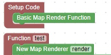

Custom Maps
Adding our own custom art to the world is a nice way to personalize your world.
You can also use them to instruct the player of the rules and give them hints
First give yourself an itemframe and a map
When you right click on the map in your hotbar it will activate the map and give it an id
You can then place the map in the itemframe
You will need a map renderer to display your own custom image
This code will create the map renderer that can display any image.
The standard image size is 128 x 128 pixels. If you use that size it will not blur the image
If the image is not size 128 x 128 it will perform a resize which will distort the image

Rename the .jpg image that you would like to display to match the message in the item frame, and
place the .jpg image in the scriptcraft/plugins/images directory located in your server folder.